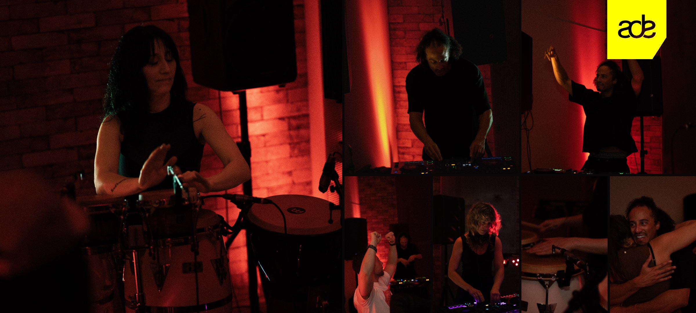
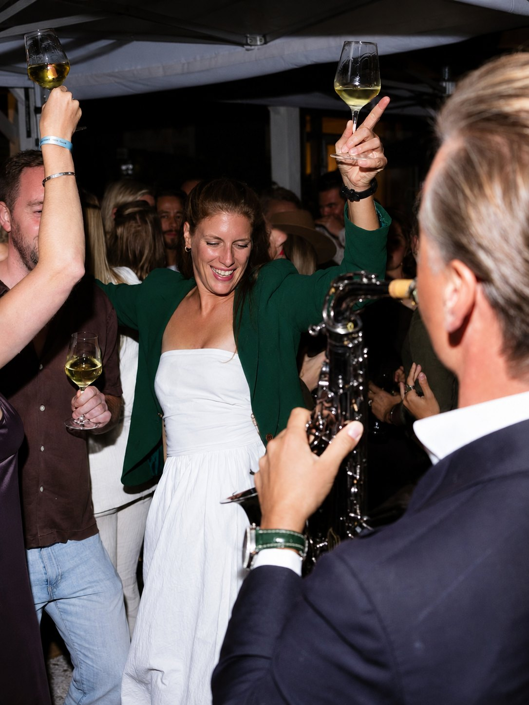
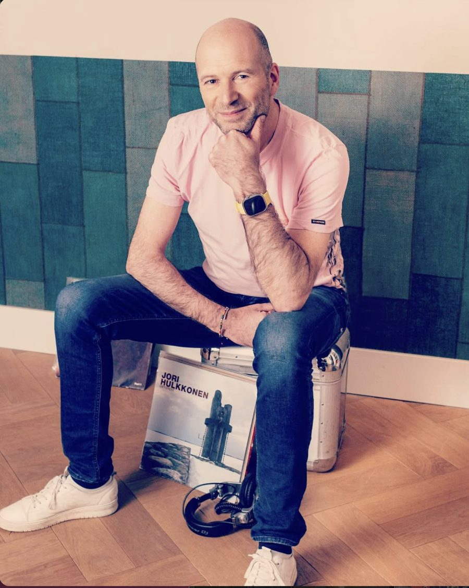
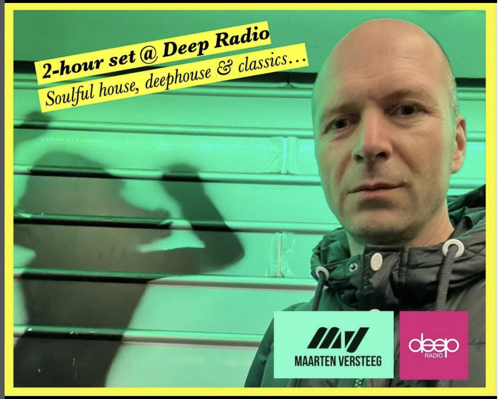
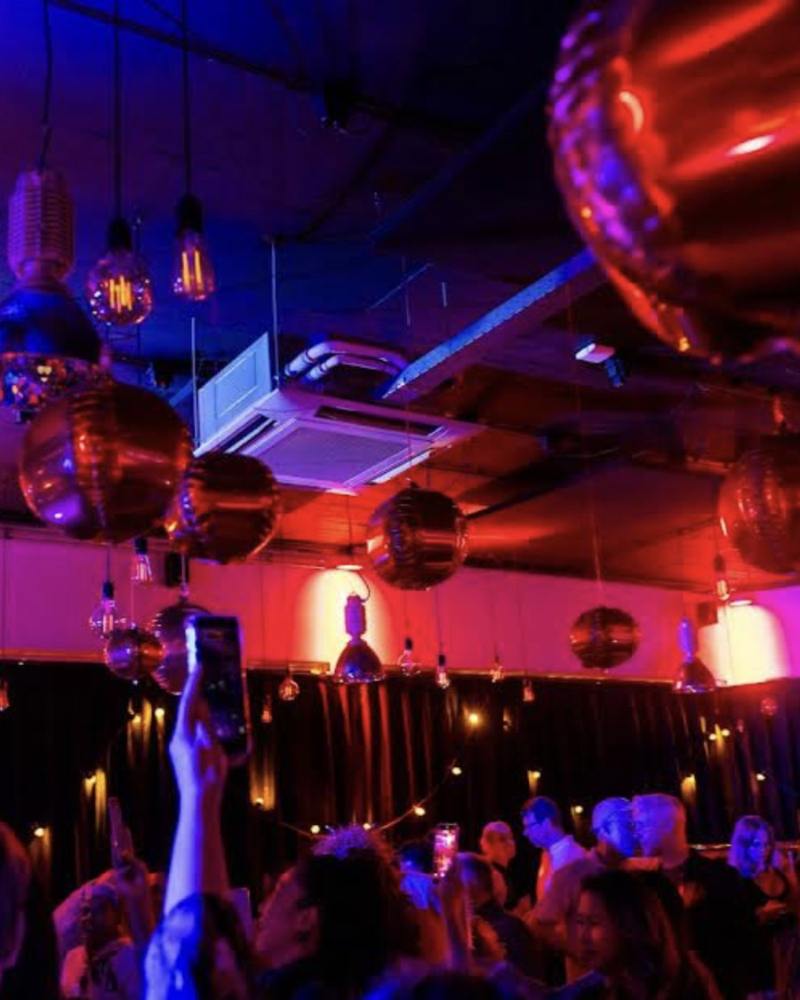

Brand activation
Brand activationLancering nieuwe sneakercollectie, daarna een feest →
Brand activationmodemerkproductlicht en lichtshow
 Dance event
Dance eventPop-up feest tijdens ADE, in een skatehal →
Franse DJ Rivo & friendsnauwelijks soundchecklocatie ombouw Zakelijk event
Zakelijk eventSeminar voor 500 gasten, daarna cocktail hour →
Netwerkeventtop 5 gemeente
Dance eventLive percussie tijdens ADE, in dramatisch rood →
MelandruRaw Drums
Zakelijk eventEen tuinfeest voor een ondernemersnetwerk →
5 jaar CreativeGroundsdj en saxofonistgericht geluid
DjDj-sets met 40 jaar elektronische muziek →
Cocktailbars en corporate eventsvia Architects in Music
DjRadioshow van twee uur op Deep Radio →
Radiomixessoulful en deep house Advies
AdviesSysteemadvies voor een verhuurbedrijf →
Een systeem dat meegroeitinkoop tegen scherpe prijs
Dance event